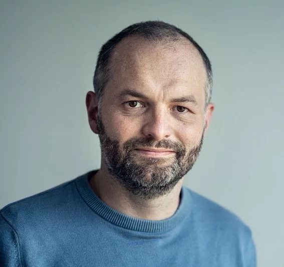
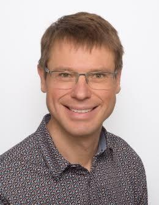
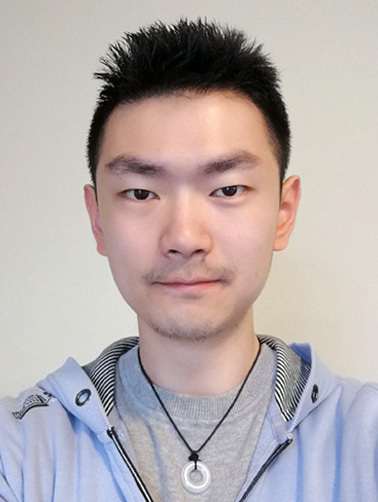
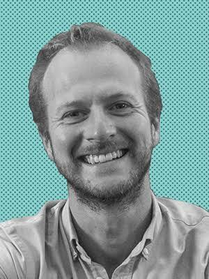
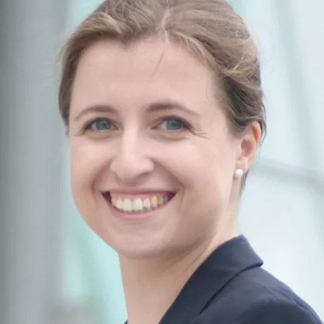
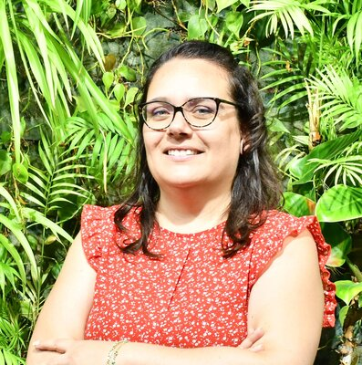

Why contact?
Physical contact is central to the functionality of soft robots. Their compliance lets them conform to objects, interact safely with humans, move through confined environments, and exploit environmental constraints in ways that are difficult for conventional rigid robots. The same deformability, however, couples contact, material properties and shape, which makes soft robots inherently challenging to control.
This workshop brings together researchers from soft robotics, computational mechanics, computer graphics, manipulation and motion planning. It begins with how contact and deformation are modelled, then turns to how these models support planning and control in contact-rich environments. A central goal is to clarify trade-offs among physical fidelity, computational efficiency, differentiability, robustness and real-time applicability, and to set common directions for simulation, planning, control, benchmarking and software development.
Topics
One day, three themes
Soft Robot Modelling
Lessons from the Rigid Community
Contact-rich Motion Planning
Tentative schedule. Talks run 25 minutes including moderated Q&A.
Invited speakers

Christian DuriezINRIA, FranceResearch director
Olivier BrulsUniversity of LiègeProfessor
Minchen LiCarnegie Mellon UniversityAssistant professorYue ChenGeorgia TechAssociate professor
Justin CarpentierINRIAResearch directorMoritz BächerDisney ResearchResearch lab directorJoseph MasterjohnToyota Research InstituteResearcher
Jessica Burgner-KahrsUniversity of TorontoProfessor
Emanuela Del DottoreUniversity of Southern DenmarkAssistant professorCosimo Della SantinaTU DelftAssociate professor